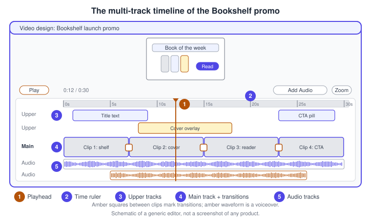
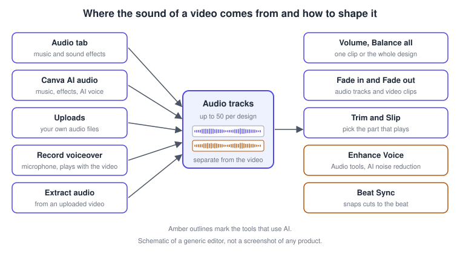
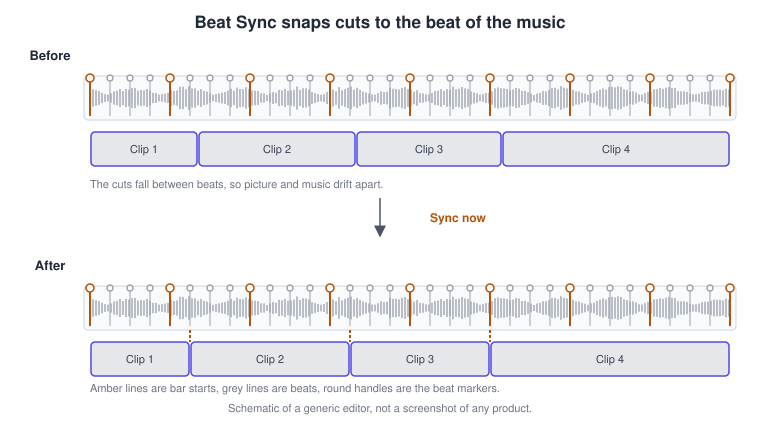
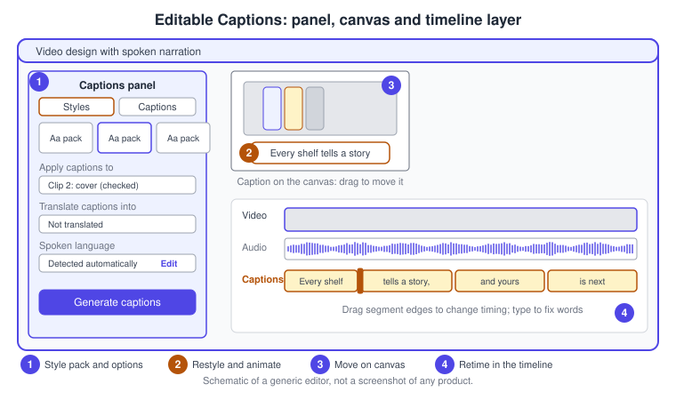
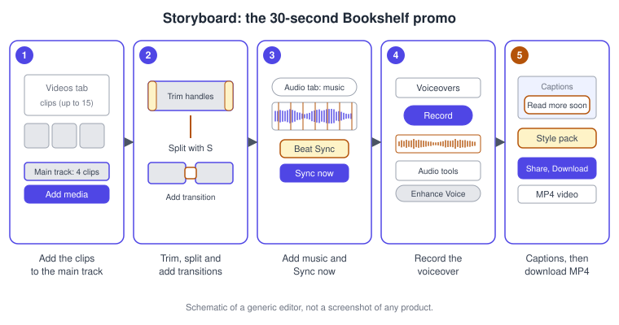

Video Editor, Audio and Captions
|
This content was generated with the assistance of AI and should be verified against the official documentation before being relied on in production. |
This page was checked against the official Canva Help Center on 2026-11-07. The video editor is part of the Canva Visual Suite: the same editor that builds posts and presentations, with a timeline at the bottom when the design is a video. Building a video, trimming it, adding music, a voiceover and captions, and downloading an MP4 are available on every account; what depends on your subscription and on the AI allowance is a handful of AI-assisted tools. Enhance Voice is available on Canva Pro, Business and Enterprise and each use is deducted from the monthly AI allowance. Beat Sync is described as AI technology that finds the beats in a song, and the Help Center points to its AI-usage article for limits. Magic Video is included with all Canva plans, including Free. Highlights appears as a Pro-and-above row of the pricing grid. Free accounts are limited to the default MP4 quality, as described in the download section. Prices are not repeated here; they are published at https://www.canva.com/pricing/, and the AI tiers are explained in Plans, Pricing and AI Allowance.
Status: the multi-track timeline is the standard editor for new video designs. The Help Center still labels the switch in your profile settings as the new multi-track video editor (beta) while its FAQ describes the timeline as the standard for all new video projects, so expect both wordings. Some features on this page, such as Highlights, animated caption styles and the mobile template-first flow, are documented as rolling out gradually and may not be visible on your account yet. The conversational Canva AI 2.0 assistant was launched as a research preview on 2026-04-16; no general-availability date is published, and it is not needed for anything on this page.
The running example is Bookshelf, the book catalogue and reading-list app designed in the Figma sub-section. This page builds the 30-second launch promo of the campaign: four clips on the main track, music with Beat Sync, a voiceover, captions and an MP4 for the social posts.
The timeline: tracks, playhead and ruler
A video design is edited on a timeline, the workspace at the bottom of the editor. It shows clips, audio and elements laid out over time. The Help Center lists these parts:
-
the playhead, the vertical line marking the current moment, which you drag to preview
-
the time ruler, which shows seconds and minutes
-
the track area, where clips, audio and elements sit
-
play controls, a plus button that adds media to the main track and an Add Audio button

Tracks keep the video organised:
| Track | What it holds |
|---|---|
Main track |
The thick track with the plus button beside it. Videos, photos and background clips placed here play one after another with no gaps. |
Upper tracks |
Text, graphics and other visuals on top of the video, and anything you drag up from the main track as an overlay. Clips in an upper track can overlap and play at the same time. |
Audio tracks |
A separate section for music, sound effects and voiceovers. |
A clip on a higher track appears on top of clips on lower tracks, as in the layers panel. Resize the timeline by hovering over the ruler until a handle appears and dragging it up or down. Zoom with a trackpad pinch, or hold Command (macOS) or Ctrl (Windows) and scroll; on mobile use the zoom control at the bottom of the editor. To preview, press the spacebar or select Play; the Preview button plays the video in full screen. To scrub, drag the playhead, or select anywhere on the ruler to jump there. Arrow keys jump the playhead backward and forward, and holding Shift moves it faster.
Starting a video
From the homepage select Video (or Create, then Videos) and choose a video design type; the editor opens with the timeline visible. Alternatively search Templates for a video template, select Customize this template and the template opens with every clip on the timeline, ready to be replaced. On a phone in Canva Classic for iOS and Android, a template can start the template-first flow instead: you pick up to 15 photos or videos on the Select media screen, preview, then either go to the full editor or download directly; it is not yet available in Canva Lite. The Help Center also mentions a Video Marketplace with stock footage, hooks and AI-powered video tools.
Designs that are not videos (presentations, social posts) have no timeline. To get one, open the page as a video from the page thumbnail’s More menu with Edit as video; choose Exit video to return to the thumbnails.
Cutting: trim, split, slip and transitions
-
Trim an element: select it in the timeline, hover over its edge and drag the left handle to change when it starts and the right handle to change when it ends. Drag the whole element left or right to move it in time, or up and down to change tracks.
-
Split: put the playhead where you want the cut, select the element and choose More, then Split, or press S. Each segment can then be deleted or edited separately.
-
Slip: right-click the main track, or use its More icon, choose Slip and drag the video content left or right to choose which part of the original clip plays, without changing the clip’s length or position. Select outside the clip to finish.
-
Duplicate or delete: More, then Duplicate (or Command or Ctrl + D); More, then Delete (or the Delete key).
-
Scene duration: select a scene (hold Shift to select several), drag its edge handles, or use the clock icon and the Timing panel to type an exact duration that is applied to all selected scenes.
-
Transitions: with the timeline visible, hover between two clips on the main track, select Add transition, pick one in the Transitions panel and adjust its duration and direction. With a single clip, split it first with S. Adding transitions is not available in page mode.
If you cannot find element timing, you are probably in page mode; select the pencil icon on the page thumbnail to switch to the video timeline.
Playback: speed, autoplay and loop
Select a video, choose Edit and use the Video speed slider, or type a value from 0.25x (slowest) to 2x (fastest); the Speed button in the top toolbar opens the same control. In designs that play on their own, such as presentations, the Playback section can switch on Play automatically and Play on repeat; looping is not available in video designs. Supported video formats are MP4, MOV, GIF, MPEG, MKV and WEBM, and playback settings work only after the video has fully uploaded.
Auto-trim, Highlights and removed tools
In a design that is not a video, a selected video shows a trim icon. Auto-trim tidies the start and end, and Highlights trims a video into one or more short clips that you select in the order you want and add to the design as pages or elements. The Help Center says Highlights is rolling out gradually, and the pricing grid lists it for Pro, Business and Enterprise.
In video designs the picture is different. The separate trim tool has been removed because trimming is built into the timeline, Auto-trim is temporarily unavailable while it is updated for the new timeline, and Duration mode has been removed in favour of dragging element edges. Magic Resize "will return in full" to video designs soon; resizing a video to other video formats works already, but resizing between static and video types is not supported, so export the video and upload it into a new static design instead.
Source: Canva Help Center: Create and edit videos (FAQs) and Canva: Plans and pricing
Audio: music, sound effects, uploads and shaping
Open the Audio tab in the side panel (under Apps if it is not visible, or Elements then the Audio category), browse or search, and select a track to add it; with a video template it lands at the playhead. A design can hold up to 50 layered audio tracks. You can also upload your own audio or generate audio with Canva AI, and Add Audio in the timeline offers the music library, sound effects, your uploads and AI voice. Tracks with a Pro icon or a currency symbol are premium. The Help Center explains that a premium purchase on a Free account is for one design only, that Pro and Business unlock unlimited use of premium music, and that the Content License Agreement governs permitted use. Canva runs audio fingerprint checks on uploaded music: if it infringes copyright you cannot publish the design with audio. If you post to social media or video platforms, verify any paid music licence when you download to avoid copyright claims. Popular music is covered by its own Help Center article and its availability varies; check it before you rely on a particular song.

Volume, fade, trim and clip
| Task | How |
|---|---|
Volume |
Select the audio track or the video, choose the volume icon and use the slider or text box. Balance all automatically balances the volume of all audio and video in the design. To mute, choose Volume then Mute. |
Fade |
Select the audio track, choose Fade and set the fade in and fade out. For a video clip with sound, select it, choose Audio tools and drag the Fade in or Fade out sliders, no extraction needed. On iOS this needs app version 4.126.0 or above. |
Trim or extend |
Select the track in the timeline and drag a trim handle to shorten it, or drag the end to extend it. |
Clip (slip) |
Choose More at the end of the track and then Adjust, or Slip on the audio toolbar, and drag the waveform inside the coloured section; only that part plays. |
Delete |
Right-click and choose Delete track, or press Delete. |
Extract audio
Right-click an uploaded video and choose Extract Audio, or open Audio tools and choose Extract. The sound appears as its own track that you can trim, reorder and cut. The Help Center lists the conditions: the video must be uploaded by you (not from Canva’s library or embedded from another site), finished processing and contain audio. The extracted audio cannot be downloaded as a separate file; it stays in the design.
Enhance Voice
Select an uploaded video or an audio track, choose Audio Tools in the quick actions toolbar and toggle on Enhance Voice to reduce background noise and bring the voice forward; a slider adjusts the strength for videos. It works only with recordings that contain voice, is available on Canva Pro, Business and Enterprise, and every use is deducted from your monthly AI allowance.
Beat Sync
Beat Sync uses AI to find the beats in a song and turns them into snap points on the audio track. Each beat marker is a white handle in the audio pill. With the feature on, pages and elements align to the music, and you can also use the snap points by hand.

| Rule | Behaviour |
|---|---|
Which beat |
Beat Sync trims the duration of a page to the first beat in the nearest bar. |
Content shorter than one bar |
Rounds down to the first beat of the nearest bar. |
Content longer than one bar |
Rounds down to the nearest beat. |
Transitions and animations |
Start and end on the nearest beat. |
Elements |
Sync along with the design; an element whose timing you already edited syncs to the nearest beat. |
Limits |
The audio track can be 10 minutes or less. Beat Sync works in presentations, social media and video designs, not in Docs, Whiteboards or Websites. |
For uploaded audio, switch on beat markers from the Beat Sync panel.
Voiceover and recording
Record voiceover records audio while the design plays. In a new blank design on the new video timeline, open Audio in the side panel, then Voiceovers, then Record voiceover (or Uploads, Record yourself, then Record voiceover); on mobile choose Add audio first and allow microphone access when asked. The recording is added to the design and to Uploads, and you can edit it like any audio track. If the playback is too fast to read from, slow the video with Speed or lengthen the scene. The option is not available in Docs, Sheets, Whiteboards or Websites; the Help Center suggests resizing the design, or generating a voice from text with AI voice. Another route works from any design: record a video of yourself, select it, choose Audio tools then Extract audio and delete the video.
Record yourself records video from inside the editor. Open Uploads, choose Record yourself, then Record a talking head, allow camera and microphone access, and pick one of three modes: Camera, Camera and Screen, or Screen only. Select Record, then Done, then Save and exit to add it to the current page; it also appears in Uploads under Videos. It currently works only in Google Chrome and Safari, is unavailable for print design types and in India, and is not the same as Present and record, which makes a shareable talking presentation (see Presentations).
Captions
Canva has two caption features, and the Help Center is explicit that they are different.
| Editable Captions | View-only captions | |
|---|---|---|
Where |
Text tab, Dynamic text, Captions; Apps, Captions; or Captions on the toolbar of a selected video or audio file |
Your account, Accessibility, Captions; or File, Accessibility, Show view-only captions on media; or Show view-only captions on a single video |
Works on |
Video designs, social media designs and audio files (M4A, MP3, OGG, WAV or WEBM) that contain speech |
Videos and audio in a design, present view and share links; not yet on Canva websites |
Editing |
Text, timing, style, animation and position |
Auto-generated and not editable |
Download |
Can be downloaded with the video |
Viewable in Canva only |

With Editable Captions the captions form a dedicated timeline layer, and there are more than 20 style packs that bundle font, colour and animation with accessibility-safe defaults. The style packs are currently offered in English, Spanish, Portuguese, French, Indonesian and German, and styles that do not match your Brand Kit are hidden. On a phone the video appears directly in the Captions panel and only the audio is processed, so captions are generated faster. If speech is unclear, there is loud background noise or music overlaps the speech, generation can fail; re-upload the video on desktop, lower the music, or as a last resort add text boxes by hand. Choose caption animations Reveal, Highlight or Snake under Animate; this animation feature is documented as rolling out gradually.
Captions also serve accessibility: see Accessibility in Canva for the design accessibility checker and the other settings.
Magic Video, image to video and AI clips
Magic Video creates a 60-second video from clips or photos, applying dynamic templates, transitions and music automatically. It is included with all Canva plans, including Free, in English, Spanish, Portuguese, Indonesian, Dutch, French, Italian and German, and is not available in Simplified Chinese, Thai or Hindi. You give it 1 to 10 clips or photos, so a set of still book covers is enough for an image-to-video result, and each uploaded video must be under 10 minutes. Limitations from the Help Center: auto-framing is not supported, so some media may be cropped unexpectedly; template availability depends on your location; the smart template library is still growing; and 4K playback performance may vary. Replacing media in a generated video updates the template but does not regenerate the layout; start a new generation for a different look.
On the web, Canva AI can also decide between a Magic Video and a Video Clip from your prompt and attachments; Video Clip generates a clip from a text prompt. Generation tools are described in AI Image and Video Generation.
Downloading the video
Select Share, then Download, choose MP4 Video, set Quality from 480p, 720p, 1080p or 4K (4K is desktop only), choose All, This page or Custom pages, and download. GIF is a separate file type with a size from 0.2x to 1x and an optional transparent background. Preview above the editor first. Download limits listed in the article:
| Account | MP4 | GIF |
|---|---|---|
Canva Free |
Up to 30 minutes and 1920 x 1080 pixels; changing quality or resolution from the default shows an upgrade prompt, which is not an error |
Up to 1 minute and 1280 x 720 pixels |
Pro, Teams, Nonprofits and Education as the article lists them |
Up to 2 hours and 3840 x 2160 pixels |
Up to 2 minutes and 1920 x 1080 pixels |
Business and Enterprise are not named in that article, so check your own account. Multi-page designs such as presentations can download pages as separate MP4 files; video designs, which use a continuous timeline, cannot. If you used paid audio and will post online, verify the licence when you download. All formats are compared in Downloading and File Formats.
Procedure: build the Bookshelf 30-second promo
This procedure uses a blank video design for the launch campaign and ends with an MP4 for the social posts.

-
From the homepage select Video and choose a video design type; the editor opens with the timeline at the bottom.
-
Select the plus button beside the main track, choose Uploads, and add the four Bookshelf clips (shelf, cover, reader, call to action). Clips on the main track play one after another.
-
Drag the edges of each clip to trim it to about seven seconds. To cut a clip in two, put the playhead on the cut, select the clip and press S.
-
Hover between two clips on the main track, select Add transition, pick one in the Transitions panel and set its duration. Repeat between each pair.
-
Add the title text from the Text tab and drag it to an upper track, then trim its edges so it appears for the first nine seconds.
-
Select Add Audio (or the Audio tab), search the music library, and select a track. Check the Pro icon or currency symbol before you commit to a premium track.
-
Select the audio pill, choose Beat Sync on the floating toolbar, switch on the beat markers, then select Sync now. Preview: each cut now lands on a beat.
-
Select Volume, lower the music, and use Balance all once the voiceover exists.
-
In Audio, choose Voiceovers then Record voiceover, read the script while the video plays, and select Done. Trim the recording on its track.
-
Select the recording, choose Audio Tools and toggle on Enhance Voice if there is room noise.
-
Select a video clip, choose Captions on the toolbar, pick a style pack, leave Apply captions to ticked for the clips with speech, optionally choose a Translate captions into language (for example Spanish), and select Generate captions. Fix wrong words by selecting a segment and typing, and retime by dragging the segment edges.
-
Press the spacebar to preview the whole video, then select Share, Download, choose MP4 Video and a quality, and download.
Procedure: add a Spanish version of the captions
-
Open the promo and select the captions layer.
-
Select any caption segment, then choose Delete all captions in the Captions panel to remove the English version, or work on a duplicate of the design.
-
Open the Captions panel, set the spoken language manually with Edit next to the automatic detection, and under Translate captions into choose Spanish.
-
Select Generate captions, check the result and adjust segment edges so that long Spanish lines stay readable.
The Help Center states the translation option applies before captions are generated, so regenerate rather than translating existing captions. Translating whole designs is covered in Resize, Bulk Create and Translate.
Procedure: turn the promo audio into a voiceover reel
-
Record a talking-head clip with Uploads, Record yourself, Record a talking head and the Camera mode.
-
Back in the editor select the clip, choose Audio tools, then Extract audio.
-
Delete the video, keep the narration track, and layer a new set of cover clips on the main track over it.
-
Trim and fade the narration, then continue with Beat Sync only if you add music.
Desktop and mobile differences
-
4K download quality is desktop only; Magic Video’s "Try a different vibe" regeneration is currently mobile only.
-
The template-first flow with up to 15 clips exists only on Canva Classic for iOS and Android.
-
Record yourself works in Chrome and Safari in the browser.
-
Keyboard shortcuts (S, spacebar, arrow keys, Command or Ctrl + D, Delete) are for computers; on mobile you tap More for Split, Duplicate and Delete.
-
Extract audio is More, then Extract Audio on mobile, and audio fade on video clips needs a recent iOS app version.
Where older guides are outdated
| Older statement | Today | Checked |
|---|---|---|
The video editor is a single timeline of page-based scenes with Duration mode and a Trim tool |
A multi-track timeline with a main track, upper tracks, audio tracks and waveforms. The trim tool and Duration mode are gone from video designs, Auto-trim is temporarily unavailable, and videos made before October 2025 keep the page-based structure |
2026-11-07 |
Audio is a single background track |
Up to 50 layered audio tracks, voiceover recording, Enhance Voice, extract audio and fade on video clips |
2026-11-07 |
Captions are the only accessibility feature of video |
Editable Captions with style packs and animation, plus separate view-only captions |
2026-11-07 |
Music counts, popular music and per-plan libraries as printed |
Libraries and licences change; confirm in the Audio tab and the pricing page |
2026-11-07 |
References
-
Canva Help Center: Adjust video playback: autoplay, loop, or speed
-
Canva Help Center: Edit and trim audio tracks in Canva videos and designs
-
Canva Help Center: Remove background noise in videos and audio using Enhance Voice
-
Canva Help Center: Enable accessibility or view-only captions on videos and audio
-
Canva Help Center: Create 60-second videos instantly with Magic Video